![unamused]() 逻辑运算 0 扩展；其余 I 型指令一律符号扩展。u 不改变扩展方式，只改变运算时的溢出检测和数值解读方式(即最高位是作为符号位还是作为数值位)。
逻辑运算 0 扩展；其余 I 型指令一律符号扩展。u 不改变扩展方式，只改变运算时的溢出检测和数值解读方式(即最高位是作为符号位还是作为数值位)。$!!!
逻辑运算 0 扩展；其余 I 型指令一律符号扩展。u 不改变扩展方式，只改变运算时的溢出检测和数值解读方式(即最高位是作为符号位还是作为数值位)。
注意：
rd:register destination(一般用于在R指令格式中作目的寄存器)
rs:register source(I、R指令格式中的第一源寄存器)
rt:register target(I指令格式中的目的寄存器、R指令格式中的第二源寄存器)
PC的问题:
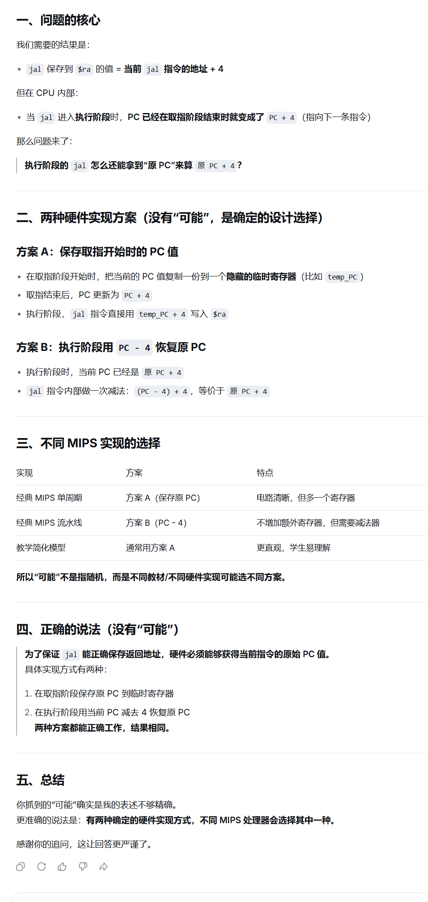
需了解的位运算点：
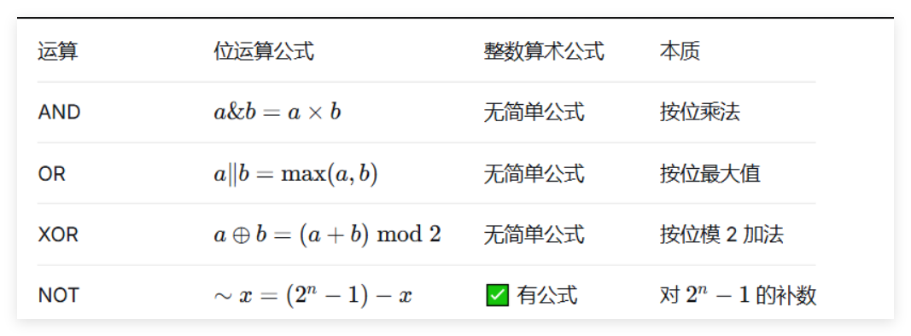
or rd,$zero,$zero或其他位运算li $rd, 0add $rd, $zero, $zeroli普世方法ori rd,$zero,1或其他位运算li rd, 1addi rd, $zero, 1li普世方法| 运算 | 与 0 | 与 1 | 与自身 |
|---|---|---|---|
| AND | 0 | 不变 | 不变 |
| OR | 不变 | 1 | 不变 |
| XOR | 不变 | 取反 | 0 |
| NOR | 取反 | 0 | 取反 |
在 MIPS 汇编中，.byte、.word 和 .space 用于在数据段（.data）中分配内存。它们的主要区别在于分配单位、是否初始化以及对齐方式。
$↓↓↓↓↓↓↓↓↓↓↓↓↓↓↓↓↓↓↓↓↓↓↓↓↓↓↓↓↓↓↓↓↓↓↓↓↓↓↓↓↓↓↓↓↓↓↓↓↓↓↓↓↓↓↓↓↓↓↓↓↓↓↓↓↓↓↓↓↓↓↓↓↓↓↓↓↓↓↓↓↓↓↓↓↓↓↓↓↓↓↓↓↓↓↓↓↓↓↓↓↓↓↓↓↓↓↓↓↓↓↓↓↓$
.byte – 分配字节.data
c1: .byte 'A' ; 分配 1 字节，存放 ASCII 65
c2: .byte 10, 20, 30 ; 分配 3 字节，连续存放 10,20,30
str: .byte 'H','e','l','l','o',0 ; 手动构造字符串（无自动结束符）
定义字节数组：.byte 1,2,3,4,5
访问时用 lb（有符号）或 lbu（无符号）读取，sb 写入。
.word – 分配字.data
x: .word 100 ; 分配 4 字节，初值 100
arr: .word 1, 2, 3, 4, 5 ; 分配 20 字节，连续存放 5 个整数
matrix: .word 0:10 ; 分配 40 字节，10 个整数初始化为 0（MARS 支持重复语法）
定义字数组：.word 0:10（10 个 0）
访问时用 lw 读取，sw 写入，下标需转换为字节偏移（乘以 4）。
.space – 分配未初始化空间.data
buffer: .space 100 ; 分配 100 字节，未初始化
arr: .space 40 ; 分配 40 字节，可用于存放 10 个 int
.space 40 可以当作 10 个 int 的数组，但需要自己管理索引（乘以 4）。
由于 .word 要求 4 字节对齐，混合使用时可能产生“空洞”：
.data
a: .byte 1 ; 地址 0x10010000
b: .word 100 ; 为了对齐，会从 0x10010004 开始（跳过 3 字节）
c: .space 2 ; 地址 0x10010008
d: .word 200 ; 地址 0x1001000c（自动对齐到 4 的倍数）
程序员通常不需要手动计算地址，汇编器自动处理。但了解对齐有助于理解内存布局。
.data
int_arr: .word 10, 20, 30, 40, 50 ; 5 个整数元素
byte_arr: .byte 'a','b','c','d','e' ; 5 个字节
buffer: .space 40 ; 40 字节未初始化（可作 10 个 int）
int_arr 为例）假设 int_arr 的地址在 $t0 中，要访问第 i 个元素（i 从 0 开始）：
la $t0, int_arr ; 数组基址
li $t1, i ; 下标
sll $t1, $t1, 2 ; 下标 × 4（字节偏移）
add $t1, $t0, $t1 ; 元素地址
lw $t2, 0($t1) ; 读取元素到 $t2
写回类似，用 sw。
| 伪指令 | 分配单位 | 是否可赋初值 | 对齐要求 | 典型用途 |
|---|---|---|---|---|
.byte |
1 字节 | ✅ 可赋初值（数值/字符） | 无 | 字符、字节数组、字符串 |
.word |
4 字节 | ✅ 可赋初值（整数） | 4 字节对齐 | 整数变量、整数数组 |
.space |
1 字节（可指定数量） | ❌ 只分配，不赋初值 | 无 | 大块缓冲区、未初始化数组 |
.byte 或 .word。.space（如模拟栈、堆）。.word 0,0,0... 或 .word 0:n（MARS 支持重复计数）。掌握这些，你就能灵活地在 MIPS 汇编中管理数据了。
lb rt, offset(rs) # load byte [I]rs 的值加上符号扩展的 16 位偏移量形成有效地址，从有效地址指向的内存读取 8 位字节，符号扩展后加载到 rt。PS:即便偏移量为0,也应当写上，比如说 lb $a0,0($t0)
PS:先是offset进行符号扩展,然后再跟rs加
lbu rt, offset(rs) # load byte unsigned [I]
rs 的值加上符号扩展的 16 位偏移量形成有效地址，从有效地址指向的内存读取 8 位字节，0扩展后加载到 rt。
lh rt, offset(rs) # load halfword [I]
rs 的值加上符号扩展的 16 位偏移量形成有效地址，从有效地址指向的内存读取 16 位半字，符号扩展后加载到 rt。
若有效地址为奇数则发生地址错误异常，地址必为 2 的倍数（0 bit 为 0）。
lhu rt, offset(rs) # load halfword unsigned [I]
rs 的值加上符号扩展的 16 位偏移量形成有效地址，从有效地址指向的内存读取 16 位半字，0扩展后加载到 rt。
若有效地址为奇数则发生地址错误异常，地址必为 2 的倍数（0 bit 为 0）。
lw rt, offset(rs) # load word [I]
rs 的值加上符号扩展的 16 位偏移量形成有效地址，从有效地址指向的内存读取 字数据 加载到 rt。
地址应为 4 的倍数（末 2 bit 为 0），否则发生地址错误异常。
lui rt, imm # load upper immediate [I]加载立即数到高半字（16bits）
rt = imm << 16 | 0x0000
将 16 位立即数左移 16 位，低 16 位补 0，结果存入 rt。
$PS:地址对齐要求与load一致$
sb rt, offset(rs) # store byte [I]
有效地址 = rs + 【符号扩展】的 16 位偏移量，将 rt 最低 8 位【值】存入有效地址指向的内存。
PS:不是rt指向的有效地址的值
sh rt, offset(rs) # store halfword [I]
有效地址 = rs + 【符号扩展】的 16 位偏移量，将 rt 低 16 位存入有效地址指向的内存（地址必为 2 的倍数）。
sw rt, offset(rs) # store word [I]
有效地址 = rs + 【符号扩展】的 16 位偏移量，将 rt 全部 32 位存入有效地址指向的内存（地址必为 4 的倍数）。
load指令一定会扩展为32bits是因为要存入寄存器，而寄存器为32bits
mfhi rd # move from HI register[R]mflo rd # move from LO register[R]mthi rs # move to HI register[R]mtlo rs # move to LO register[R]add rd, rs, rt [R]
rs + rt → rd，可能检查补码溢出。
addu rd, rs, rt [R]
不检查补码溢出（一般用于地址运算）。不代表零扩展
addi rt, rs, imm [I]
rs + 符号扩展至 32 位的立即数 → rt，会检查补码溢出。
addiu rt, rs, imm [I]
rs + 符号扩展至 32 位的立即数 → rt，不检查补码溢出。
注：此处
unsigned仅代表不检查补码溢出，不代表零扩展。立即数仍进行【符号扩展】，只是将最高位视为数值位。这里的imm还是符号扩展，只不过rs+imm得到的答案按无符号数来看，所以不会检查溢出
检查 这个词很微妙
sub rd, rs, rt [R]
rs - rt → rd，会检查补码溢出。
subu rd, rs, rt [R]
不检查补码溢出。
mult rs, rt [R]
rs * rt，64 位积：高 32 位 → HI，低 32 位 → LO。操作数视为有符号数，不产生溢出。
结果可用 mfhi / mflo 取出。
multu rs, rt [R]
操作数视为无符号正数，其余同 mult。
div rs, rt [R]rs ÷ rt：商 → LO，余数 → HI。操作数符号相反时商为负；余数符号与被除数 rs 相同。不产生溢出异常。
除数为 0 时结果未定义。
对于 div rs, rt（有符号除法）：
- 商向 0 取整（truncate toward zero）
- 余数 = 被除数 − 商 × 除数
- 余数的符号 = 被除数的符号
$PS:数学上，余数应当恒为正$
divu rs, rt [R]div。and rd, rs, rt [R]
rs与rt按位与 → rd。
andi rt, rs, imm [I]
rs 与 0扩展至 32 位的立即数按位与 → rt。
注：立即数高 16 位默认为 0，若需非 0 掩码，先用
lui+ori构造。
or rd, rs, rt [R]
按位或 → rd。
ori rt, rs, imm [I]
rs 与 0扩展至 32 位的立即数按位或 → rt。
nor rd, rs, rt [R]
按位或非（先或后取反） → rd。
xor rd, rs, rt [R]
按位异或 → rd。
xori rt, rs, imm [I]
rs 与 0扩展的立即数按位异或 → rt。
注意移位指令是rd,rt,而非rt,rs
sll rd, rt, sa shift left logical[R]rt 左移 sa 位，空位补 【0】 → rd。$PS:sa如果超过5位会截断$
sllv rd, rt, rs shift left logical variable[R]
rt 左移 rs 低 5 位指定的位数，空位补 【0】 → rd。
最多移位 31 位（5 bit 全 1）。
srl rd, rt, sa shift right logical[R]
rt 逻辑右移 sa 位，空位补 【0】 → rd。
srlv rd, rt, rs shift right logical variable[R]
rt 逻辑右移 rs 低 5 位指定的位数，空位补 【0】 → rd。
sra rd, rt, sa shift right arithmetic[R]
rt 算术右移 sa 位，空位用【符号位】填充 → rd。
srav rd, rt, rs shift right arithmetic variable[R]
rt 算术右移 rs 低 5 位指定的位数，空位用【符号位】填充 → rd。
slt rd, rs, rt set if less than[R]
若 rs < rt（有符号比较），rd 置 1，否则置 0。
sltu rd, rs, rt set if less than unsigned[R]
若 rs < rt（无符号比较），rd 置 1，否则置 0。
slti rt, rs, imm set if less than immediate[I]
若 rs < 【符号扩展】的立即数（有符号），rt 置 1，否则置 0。
sltiu rt, rs, imm set if less than immediate unsigned[I]
若 rs < 【符号扩展】的立即数（无符号），rt 置 1，否则置 0。
j label [J]
PC 高 4 位拼接 26 位立即数左移 2 位 → PC。
左移两位-->指令均为32位，以字为单位，故0、1bit必为0
指令的增加，一般不会影响到高四位
jal label jump and link[J]
将
PC当前值(说明PC已+4)保存在$ra中，然后将【当前PC的前四位】与【26位立即数左移两位之后】连接起来形成一个地址，加载到PC。
jalr rd, rs jump and link register[R]
将返回地址（PC(已加过4)）存入 rd，然后跳转至 rs 中的地址。
使用前
rs必须已加载有效地址。
jr rs jump register unconditionally[R]
跳转至 rs 中的地址。常用于函数返回：jr $ra。
beq rs, rt, label branch if equal[I]
若 rs == rt，跳转至 label。
bne rs, rt, label branch if not equal[I]
若 rs != rt，跳转至 label。
bgez rs, label branch if greater than or equal to zero[I]
若 rs >= 0，跳转至 label。
bgezal rs, label branch if greater than or equal to zero and link[I]
若 rs >= 0，将返回地址存入 $ra 后跳转。
bgtz rs, label branch if greater than zero[I]
若 rs > 0，跳转。
blez rs, label branch if less than or equal to zero[I]
若 rs <= 0，跳转。
bltz rs, label branch if less than zero[I]
若 rs < 0，跳转。
bltzal rs, label branch if less than zero and link[I]
若 rs < 0，将返回地址存入 $ra 后跳转。
syscall [R]addu rd, $zero, rs
bgez rs, 1f #此处为行标号
sub rd, $zero, rs
1:
先加到rd寄存器里，如果rd值大于等于0，无事，否则用0减自己
beq rs, $zero, label
slt $at, rs, rt
beq $at, $zero, label
使用slt，大于等于即为不小于，即赋值0，再考虑与0的大小关系
sltu $at, rs, rt
beq $at, $zero, label
slt $at, rt, rs
bne $at, $zero, label
判断rs是不是大于rt,即判断rt是不是小于rs，即判断`$at`是不是1,即判断`$at`是不是不等于0(因为只有判断是否为0的，故在判断是否为1时应当判断是否不等于0!)
sltu $at, rt, rs
bne $at, $zero, label
slt $at, rt, rs
beq $at, $zero, label
sltu $at, rt, rs
beq $at, $zero, label
rs小于等于rt即为rt大于等于rs,即rt不小于rs,如果rt小于rs,则置0
slt $at, rs, rt
bne $at, $zero, label
sltu $at, rs, rt
bne $at, $zero, label
bne rs, $zero, label
bgez $zero, label
# 或
beq $zero, $zero, label
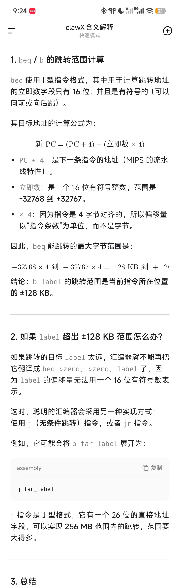
在此处PC=PC+imm<<4(说明PC已+4)
bne rt, $zero, ok
break $zero
ok:
div rs, rt
mflo rd
li $at,imm #实际上还要细分，li也有不同的展开，主要看imm的值
bne $at, $zero, ok
break $zero
ok:
div rs, $at
mflo rt
bne rt, $zero, ok
break $zero
ok:
divu rs, rt
mflo rd
li $at,imm #实际上还要细分，li也有不同的展开，主要看imm的值
bne $at, $zero, ok
break $zero
ok:
divu rs, $at
mflo rt
lui $at, %hi(label)
ori rd, $at, %lo(label)
#符号 %hi() 和 %lo() 是 MIPS 汇编器提供的运算符，用来在汇编阶段把一个 32 位地址拆分成高 16 位和低 16 位。
lui $at, %hi(value)
ori rd, $at, %lo(value)
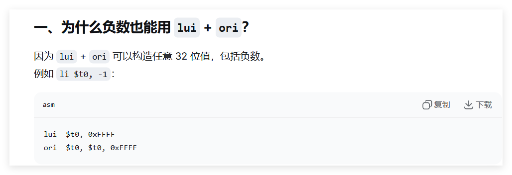
有时候加载负数也可以使用:addiu
ori rd, $zero, value
PS:有时-3276value
addu rd, $zero, rs
mult rs, rt
mflo rd
li $at,imm
mult rs, $at
mflo rt
注意:
没有mulu的用法，因为不管有无符号，其低32位数都相同:
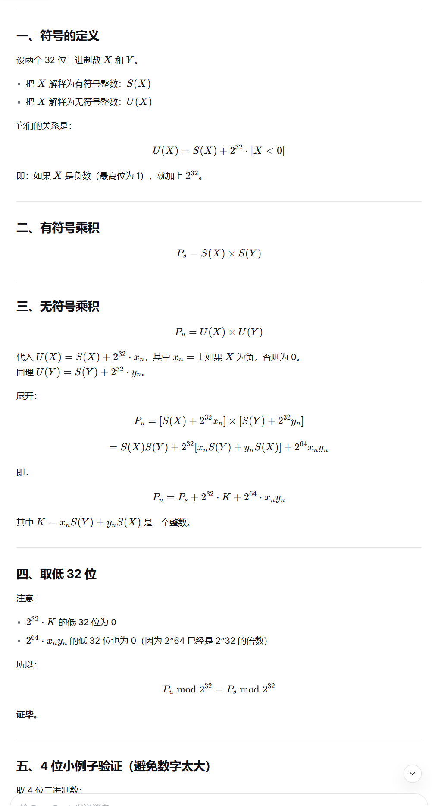
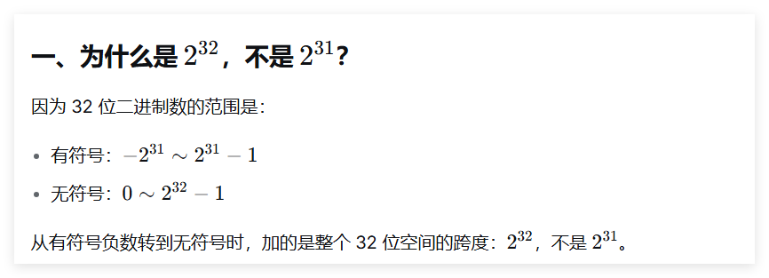
mult rs, rt
mfhi $at
mflo rd
sra rd, rd, 31
beq $at, rd, ok
break $zero
ok:
mflo rd
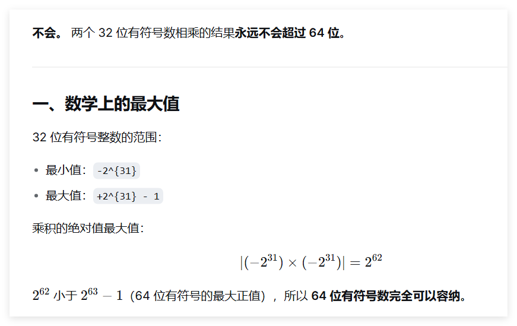
multu rs, rt
mfhi $at
beq $at, $zero, ok
break $zero
ok:
mflo rd
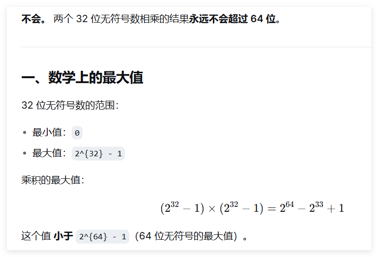
sub rd, $zero, rs
subu rd, $zero, rs
or $zero, $zero, $zero
nor rd, rs, $zero
bne rt, $zero, ok
break $zero
ok:
div rs, rt
mfhi rd
注意老式写法：
bne rt,$0,8 # 如果 rt != 0，跳过 8 字节即 2 条指令（即直接跳到 mfhi 行）
break $0
div rs,rt
mfhi rd
li $at,imm
bne $at, $zero, ok
break $zero
ok:
div rs, $at
mfhi rt
bne rt, $zero, ok
break $zero
ok:
divu rs, rt
mfhi rd
li $at,imm
bne $at, $zero, ok
break $zero
ok:
divu rs, $at
mfhi rt
subu $at, $zero, rt # $at = -rt (补码)，其低5位等效于 32 - rt
#主要是因为我们要32-rt,但是这样的话，我们没有在rs上放立即数的方式
不然我们就要用一个寄存器存放固定值32了
srlv $at, rs, $at
sllv rd, rs, rt
or rd, rd, $at
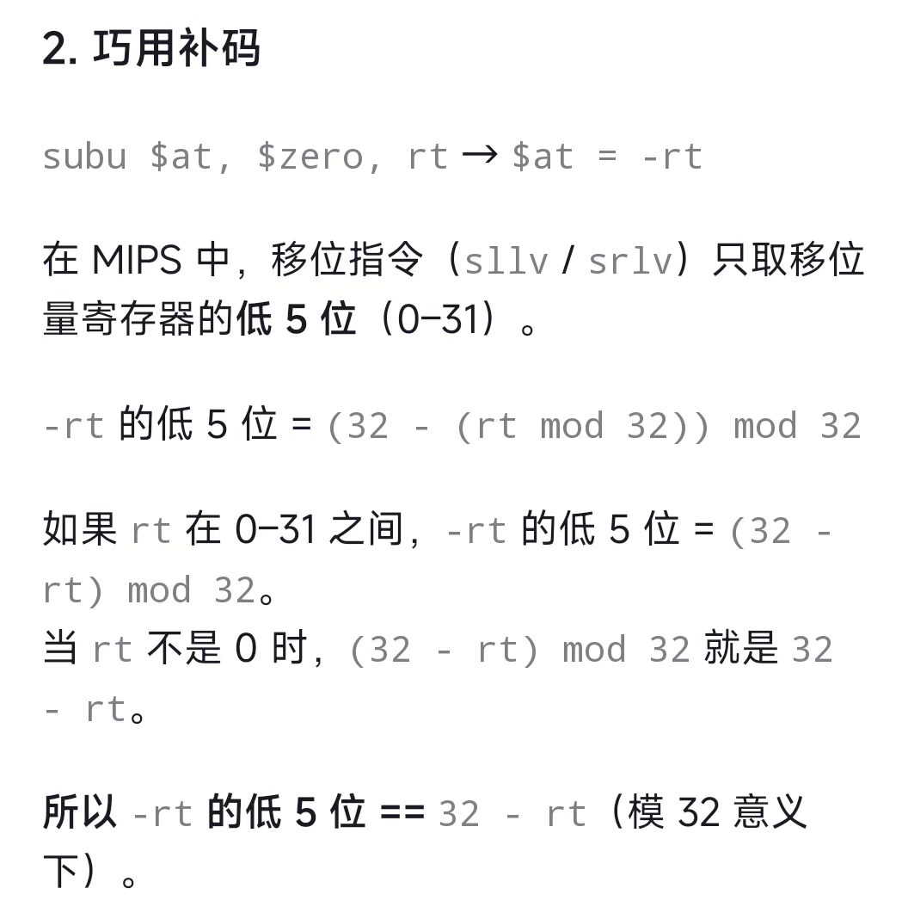
srl $at, rs, 32-sa
sll rd, rs, sa
or rd, rd, $at
subu $at, $zero, rt
sllv $at, rs, $at
srlv rd, rs, rt
or rd, rd, $at
sll $at, rs, 32-sa
srl rd, rs, sa
or rd, rd, $at
beq rt, rs, yes
ori rd, $zero, 0
beq $zero, $zero, skip
yes:
ori rd, $zero, 1
skip:
bne rt, rs, yes
ori rd, $zero, 1
beq $zero, $zero, skip
yes:
slt rd, rt, rs
skip:
PS:一种优化思路:
slt $at, rs, rt # $at = 1 if rs < rt
xori rd, $at, 1 # 取反：1→0, 0→1
bne rt, rs, yes
ori rd, $zero, 1
beq $zero, $zero, skip
yes:
sltu rd, rt, rs
skip:
slt rd, rt, rs
sltu rd, rt, rs
bne rt, rs, yes
ori rd, $zero, 1
beq $zero, $zero, skip
yes:
slt rd, rs, rt
skip:
bne rt, rs, yes
ori rd, $zero, 1
beq $zero, $zero, skip
yes:
sltu rd, rs, rt
skip:
beq rt, rs, yes
ori rd, $zero, 1 #非逻辑设置，置1方法
beq $zero, $zero, skip
yes:
ori rd, $zero, 0
skip:
| 编号 | 助记符 | 用途说明 | 英文全称 / 翻译 |
|---|---|---|---|
| 0 | $zero |
恒为 0，写入无效 | zero constant |
| 1 | $at |
汇编器临时使用（展开伪指令） | assembler temporary |
| 2-3 | $v0 ~ $v1 |
函数返回值 | value returned |
| 4-7 | $a0 ~ $a3 |
函数实参（前 4 个） | arguments |
| 8-15 | $t0 ~ $t7 |
临时寄存器，调用者保存 | temporary |
| 16-23 | $s0 ~ $s7 |
保存寄存器，被调用者保存 | saved |
| 24-25 | $t8 ~ $t9 |
临时寄存器（同 t0~t7） | temporary |
| 26-27 | $k0 ~ $k1 |
保留给 OS 内核，异常处理用 | kernel reserved |
| 28 | $gp |
全局数据区指针 | global pointer |
| 29 | $sp |
栈顶指针 | stack pointer |
| 30 | $fp / $s8 |
帧指针（或作为第 9 个保存寄存器） | frame pointer / saved |
| 31 | $ra |
函数返回地址 | return address |
| 名称 | 用途说明 | 翻译 |
|---|---|---|
| PC | 程序计数器，存放下一条指令地址 | Program Counter |
| HI | 乘法结果高 32 位 / 除法余数 | HIgh word |
| LO | 乘法结果低 32 位 / 除法商 | LOw word |
| IR | 指令寄存器，存放当前执行的机器码 | Instruction Register |
HI 与 LO 除了记录乘除法结果以及用特定指令传输到寄存器堆以外，其他指令都不能使用，因而称为专用寄存器
*PC中存放的是将要取出执行的指令所在内存单元的地址。PC的初始值由操作系统指定，即为将要执行程序的第一条指令所存放的内存单元的地址。*程序计数器中的地址通过总线传送到指令缓存的地址输入端。当一条指令已从内存取出并存放到指令寄存器(IR,$Instruction\ Register$)中后，PC的增量为4，CPU便有了下一条指令所在内存位置的地址，以便CPU顺序提取下一条指令。
as），也叫汇编器/解释器。int, char, float）带有语义和检查（如不能把 float 直接当指针用）。$0 ~ $31）。$a0 ~ $a3（编号 4~7）。超过 4 个参数时，其余参数通过堆栈传递。
$v0 ~ $v1（编号 2~3）。通常 32 位返回值仅用 $v0，64 位返回值使用 $v0 和 $v1 共同存放。
$t0 ~ $t9 是临时寄存器，按照 MIPS 调用约定，被调用函数（A）不需要保存它们。
因此 Main 必须在调用 A 之前自己把 $t0 保存到栈中，A 返回后再从栈中恢复。
addiu $sp, $sp, -4
sw $t0, 0($sp) # 保存 t0
jal A
lw $t0, 0($sp) # 恢复 t0
addiu $sp, $sp, 4


可以理解为函数传形参、引用等
$s0 ~ $s7 是保存寄存器，调用约定规定被调用函数（A）必须保证这些寄存器在返回时与调用前一致。
因此 Main 无需额外保存，A 若需要使用 $s0，会在自己的代码开头保存并在返回前恢复。
Main 侧无需任何操作，直接调用即可。
$k0, $k1（编号 26~27），用于异常处理。$at（编号 1），汇编器在展开伪指令时临时使用。$at。$ra（编号 31）。$sp（编号 29）。.asm 源文件。.o 或 .obj）。_start 或 main 入口开始逐条取指、译码、执行。汇编语言程序员在使用文本编辑器编写好汇编语言程序后，汇编语言程序中的助记符需要通过该一个名为汇编程序（或称汇编器）的使用程序（或称系统软件），转换为机器语言程序（或称机器语言代码）。机器语言程序以文件形式存储在计算机磁盘上。当需要执行这个程序时，另一个称为链接装载器的实用程序，负责装在和链接所有必须要使用的机器语言模块进入到内存，使得机器语言程序中的每一条指令按顺序存储在内存中。
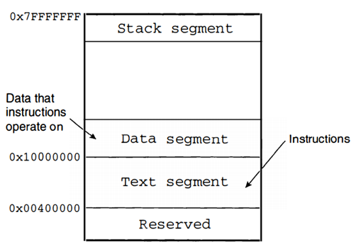
而对于字节在字中的存储顺序
1word-4byte-32bit
本书使用的模拟器是建立在Intel系统上的，Intel系统属于小尾端阵营。因此本书示例在处理字数据的存储时，都使用低字节对应低地址、高字节对应高地址的方式。
例：将字0x12345678存储在地址0x10000000的存储器中
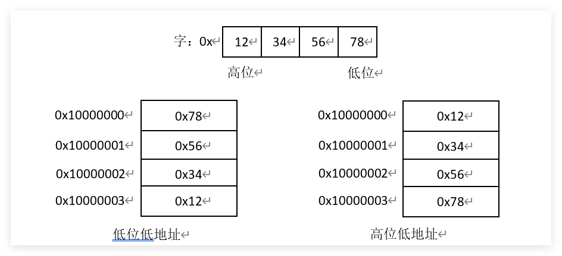
64KB = 2^16 字节，地址范围从 0x0000 到 0xFFFF。
通常分为：
简易图示（按字节编址）：
0x0000 ┌────────────┐
│ Text │ 代码段
0x???? ├────────────┤
│ Data │ 已初始化数据
0x???? ├────────────┤
│ BSS │ 未初始化数据
0x???? ├────────────┤
│ Heap │ → 向高地址增长
│ ... │
│ Stack │ ← 向低地址增长
0xFFFF └────────────┘
#本图一般反过来理解
0x0003：对齐无要求，可直接读取该地址 1 字节。0x0002：半字对齐要求地址为 2 的倍数，0x0002 符合，可读取 0x0002 和 0x0003 两个字节组成半字。0x0001：字对齐要求地址为 4 的倍数，0x0001 不符合，将引发地址错误异常。典型 MIPS 进程内存布局（从低地址到高地址）：
R 格式共 6 个字段：
| op (6) | rs (5) | rt (5) | rd (5) | sa (5) | funct (6) |
|---|---|---|---|---|---|
例子：add $t0, $t1, $t2 |
|||||
op=000000, funct=100000。 |
操作码(opcode)字段占用6位二进制位(31~26)，且这6位全为0.最低的二进制位，即功能(function)字段，不同的编码定义ALU要执行的具体操作(加减乘除等)
I 格式共 4 个字段：
| op (6) | rs (5) | rt (5) | immediate (16) |
|---|---|---|---|
例子：lw $t0, 4($sp) |
|||
op=100011, rs=$sp, rt=$t0, imm=0004。 |
J 格式共 2 个字段：
| op (6) | address (26) |
|---|---|
例子：j label |
|
op=000010, address 为目标地址的高 26 位（实际地址需左移 2 位后与 PC 高 4 位拼接）。 |
以 R 型 add $t0, $t1, $t2 为例：
rs、rt 读取 $t1、$t2 的值。rd 指定的 $t0。I 型和 J 型在地址计算和目标写入上有所区别，但基本五阶段流水线结构相同。
在简化的MIPS架构模型上执行程序，不考虑流水线，以R格式指令为例，可以描述为以下逻辑步骤：
详细查看:指令执行
在机器指令中，由两类寻址:
MIPS 支持 5 种操作数寻址方式： 针对操作数的寻址
addi $t1,$t2,5)add $t0,$t1,$t3)在寄存器堆中，每个寄存器的编号就是其地址，在指令机器码中以5个二进制位表示
存储单元寻址
3. 基址寻址：操作数在内存中，地址 = 寄存器 + 16 位偏移量（lw/sw）。
基地址(存放在某个【通用】寄存器中)+位移量(在指令中以16bits补码数存放)$(base\ addressing+displacement)$


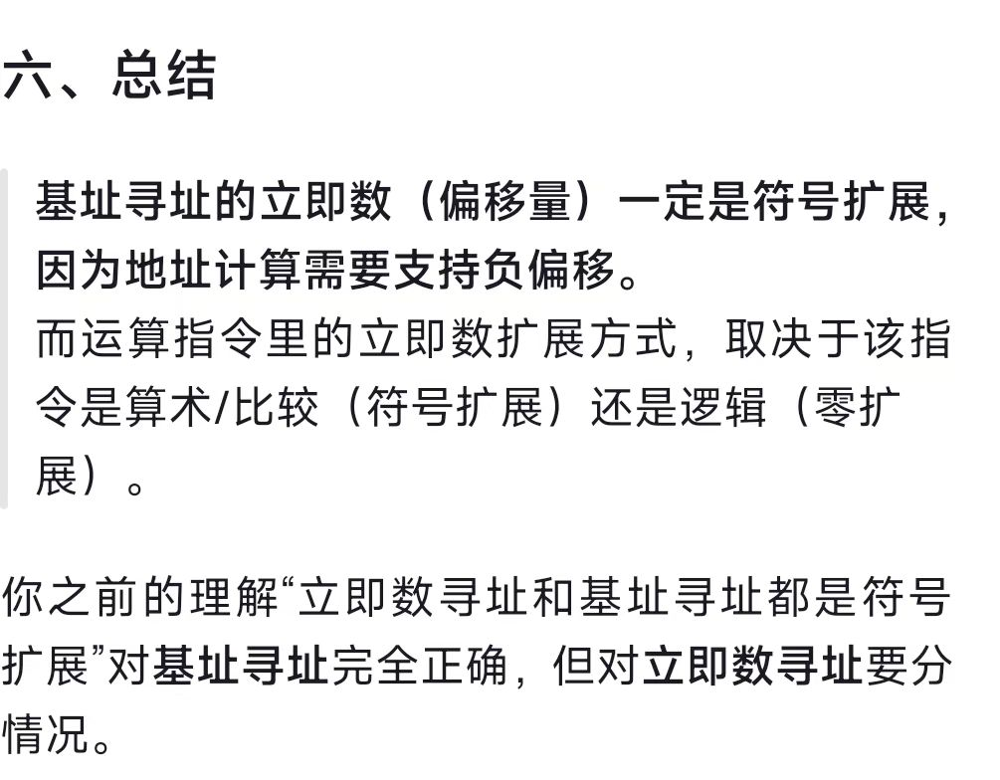
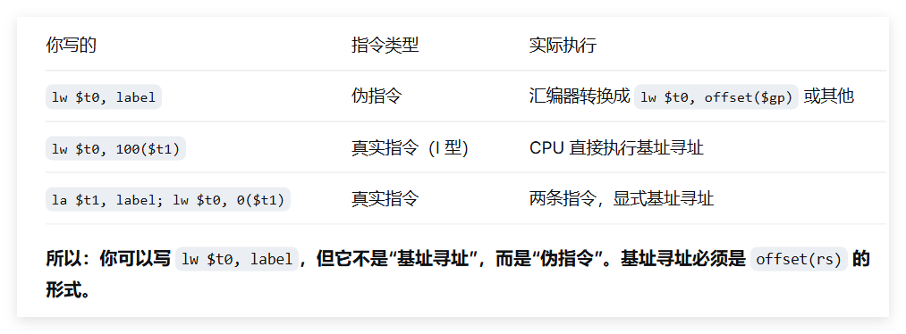
针对目标地址的寻址 分支转移：
实现高级语言的分支、循环以及函数调用与返回等语言成分必不可少的操作。
实质时改变了程序顺序执行指令的行为（PC增量定值的行为），通过修改PC值实现分支转移功能。
j（无条件转移指令）/jal（无条件转移指令并链接），26 位地址左移 2 位与 PC 高 4 位拼接。
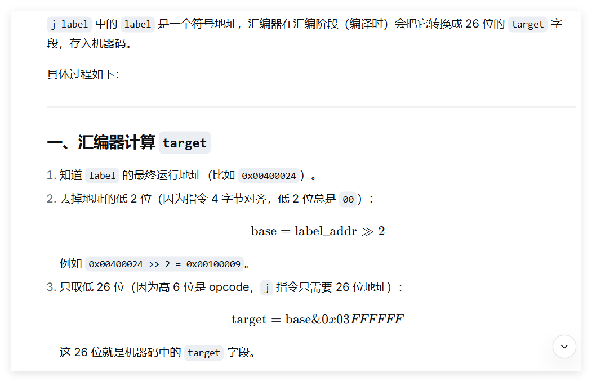
j 的跳转范围是 256 MB，高 4 位来自当前 PC，不能自由改变，所以只能在当前 PC 所在的 256 MB 区域内跳转。
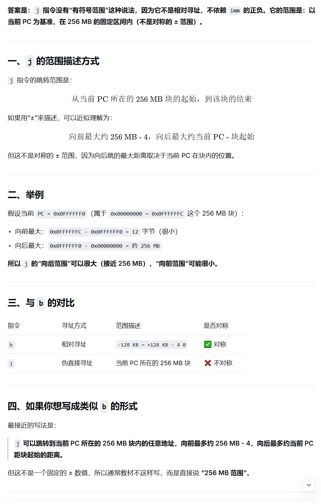
"256MB块" 不是硬件专门划分的，而是 j 指令的地址计算方式天然导致了这种“块”的存在(一种描述性术语，并非硬件结构)
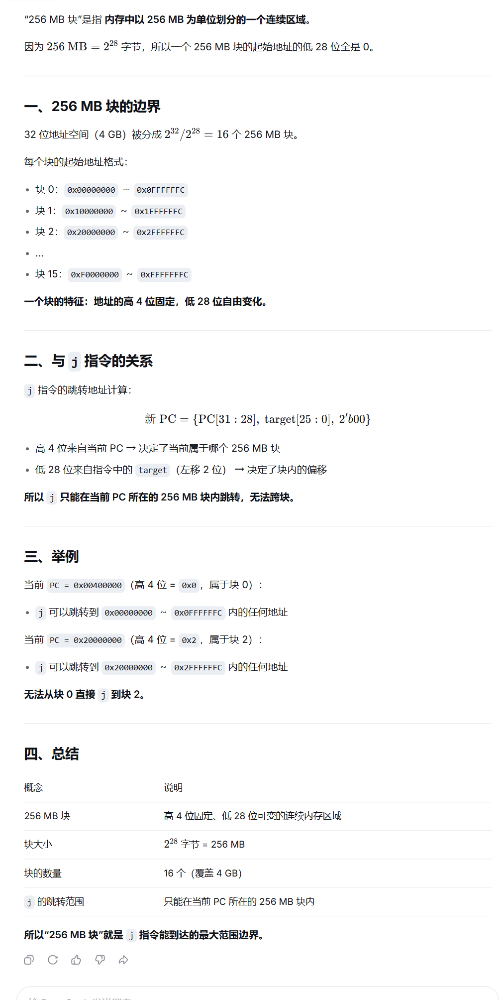

为什么 jr 不是直接寻址？

实际上是I指令格式，imm在静态编译时，通过公式imm=(y-x-4)>>2（右移2位是因为指令地址都是4的倍数，插值也是，地两位必然是0，不必记录，即求得:当前地址与label中间隔imm条指令）算得。然后在动态运行时在IR中填入这个imm
PS：之所以要减去4，是因为跳转指令执行的第一阶段($IF$)已将PC加了4
I指令各式中Imm位数有限，不记录低2位就可以多记录前面2位，可以增加相对地址表达的空间，由$2^16$增加到$2^18$,即扩大了可以相对转移到地址范围。
即:不省略低 2 位：能表示 2^16 种不同的字节偏移；省略低 2 位：能表示 2^16 种不同的指令条数，对应 2^16 × 4 = 2^18 种字节偏移
imm 是 16 位有符号整数，范围 -32768 ~ +32767-131072 ~ +131068 字节-128 KB ~ +128 KB - 4 B2^{18} 字节 = 256 KB如果跳转范围过大，超出指令表达范围，则编译程序会给出错误，程序员需要用其他方式完成跳转
| 项目 | 值 |
|---|---|
imm 位数 |
16 位有符号 |
imm 最小值（二进制） |
1000 0000 0000 0000 = -32768 |
imm 最大值（二进制） |
0111 1111 1111 1111 = +32767 |
| 字节偏移最小值 | -32768 × 4 = -131072 字节 |
| 字节偏移最大值 | +32767 × 4 = +131068 字节 |
| 换算成 KB | -128 KB ~ +128 KB - 4 B |
| 寻址方式 | 操作数位置 | 寻址过程 | 指令格式 | MIPS 典型指令 | 通俗类比 | 为何叫这个名字 |
|---|---|---|---|---|---|---|
| 立即数寻址 | 指令内部 | 直接从指令码中提取常数 | I 型 | addi $t0, $t1, 5 |
口袋里直接摸出 5 块钱 | 数据立即可得，就在指令里 |
| 寄存器寻址 | 寄存器 | 直接读寄存器文件 | R 型 | add $t0, $t1, $t2 |
从抽屉里拿东西 | 数据在寄存器里，选号即用 |
| 基址寻址 (基址+偏移) |
内存 | 地址 = 寄存器值 + 偏移量 | I 型 | lw $t0, 100($t1) |
以书架第一层为基准，往右数 10 本书 | 寄存器提供基地址，偏移量定位具体位置 |
| 寄存器间接寻址 | 内存 | 地址 = 寄存器值 | R 型 (跳转类) |
jr $rajalr $t0 |
纸条上写着门牌号，按号去找 | 不直接给数据，给的是存放数据的地址（间接） |
| 伪直接寻址 | 指令附近 (256MB 内) |
地址 = PC[31:28] || imm<<2 | J 型 | j labeljal label |
说“大厦 12 楼”，默认还在本栋楼 | 看起来像直接给 26 位地址，实则要靠 PC 高 4 位拼凑（伪） |
| 相对寻址 | 指令附近 | 地址 = PC + imm<<2 | I 型 | beq $t0, $t1, label |
“往前走 3 步”而不是“去 403 房间” | 目标是相对于当前 PC 的位移量 |
| 寻址方式 | 说明 | 最大寻址范围 |
|---|---|---|
| 寄存器寻址 | 操作数在寄存器中 | 单个寄存器 32 位，无范围概念 |
| 立即数寻址 | 操作数在指令内部 | 16 位立即数，范围 -32768 ~ +32767（有符号）或 0 ~ 65535（无符号） |
| 存储单元寻址（基址寻址） | 地址 = 基址寄存器 + 符号扩展的 16 位偏移量 | 偏移量范围 -32768 ~ +32767 字节，实际寻址范围取决于基址寄存器 |
| 寻址方式 | 说明 | 最大寻址范围 |
|---|---|---|
| 直接寻址（伪直接寻址） | j / jal，地址 = {PC[31:28], target, 00} |
256 MB（当前 PC 所在的 256 MB 块内） |
| 寄存器间接寻址 | jr / jalr，地址 = 寄存器的值 |
4 GB（整个 32 位地址空间） |
| 相对寻址 | beq / bne 等分支指令，地址 = PC + (imm << 2) |
±128 KB（约 -131072 ~ +131068 字节） |
imm 为 16 位有符号数，乘以 4 后得到字节偏移范围约 ±128 KB。addi, ori, lui）。add, sub, and）和部分 I 格式（如 beq 的源操作数）。offset(rs)，如 lw $t0, 8($sp)。lb, lbu, lh, lhu, lw, sb, sh, sw。用于改变程序控制流（跳转和分支）。MIPS 中目标地址寻址分为：
j, jal）：快速跳转到 256MB 范围内的绝对地址。beq, bne 等）：相对于当前 PC 的偏移跳转，适合短距离条件分支。jr $ra 或 jalr $t0 实现寄存器间接跳转，即 PC ← rs。j, jal）。imm = (目标地址 - (当前 PC + 4)) >> 2。label。lb, lbu, lh, lhu, lwlwu：因为 lw 本身就是加载 32 位字，已经填满目标寄存器，无需扩展。sb, sh, swmfhi rd，R 格式。mtlo rs，R 格式。宏指令（伪指令）是汇编器提供的便利助记符，在硬件中不存在对应的机器码。汇编时会被展开为一条或多条真实的机器指令。例如 li $t0, 100 → addiu $t0, $zero, 100。
无法用单条指令直接将 32 位立即数写入内存，需要分两步：
lui + ori）。sw 将寄存器值存入内存。lui $at, 0x1234
ori $at, $at, 0x5678 # $at = 0x12345678
sw $at, 0($t0) # 存入 t0 指向的内存
16 位立即数可用 ````asm lui $at, 0x1234 ori $at, $at, 0x5678 # $at = 0x12345678 sw $at, 0($t0) # 存入 t0 指向的内存
数据传送类指令 Q14：如何把 16 位立即数 Imm 存放到 Mem 中？
16 位立即数可用 `ori` 或 `addiu` 直接加载到寄存器，再 `sw` 存出：
```asm
ori $at, $zero, 0x1234
sw $at, 0($t0)
ori $at, $zero, 0x1234
sw $at, 0($t0)
```
数据传送类指令 Q15：写出宏指令 li $10, 0xfffffff 的实现代码。
`0xfffffff` 实际是 `0x0fffffff`（28 位有效），需要 `lui` + `ori`：
```asm
lui $t0, 0x0fff # 高 16 位：0x0fff
ori $t0, $t0, 0xffff # 低 16 位：0xffff
```
最终 ````asm
lui $t0, 0x0fff # 高 16 位：0x0fff
ori $t0, $t0, 0xffff # 低 16 位：0xffff
```
最终 `$t0` = `0x0fffffff`。
数据传送类指令 Q16：通用寄存器之间传送数据的宏指令是什么？其如何实现？
- 宏指令：`move rd, rs`
- 实现：`addu rd, $zero, rs`
（将 `rs` 加 0 的结果放入 `rd`）
算数运算类指令 Q17：加法指令包括哪些？分别是什么类型的指令？带 u 和不带 u 有何区别？
- **R 型**：`add`, `addu`
- **I 型**：`addi`, `addiu`
- **区别**：
- 带 `u`：不检测补码溢出，结果直接截断 32 位。
- 不带 `u`：可能引发溢出异常（取决于具体实现）。
算数运算类指令 Q18：减法指令包括哪些？分别是什么类型的指令？
- `sub`：R 型，检测溢出。
- `subu`：R 型，不检测溢出。
- **没有 I 型减法**。
算数运算类指令 Q19：减法指令为何不像加法指令那样有带 XXi 型指令？如何实现减去一个立即数？
- **原因**：减法可以通过**加上一个负数立即数**实现，没必要单独设计 `subi` 指令，节省了指令编码空间。
- **实现**：`addiu rt, rs, -imm`
因为立即数在 `addiu` 中会【符号扩展】，负数可以正确参与运算。
算数运算类指令 Q20：与减法指令相关的宏指令有哪些？
- `neg rd, rs`（求补）：展开为 `sub rd, $zero, rs`。
- `negu rd, rs`（无符号求补）：展开为 `subu rd, $zero, rs`。
算数运算类指令 Q21：求补宏指令能否对 -2^31 求补？
**不能**。
`-2^31` 的补码是 `0x80000000`，其相反数 `2^31` 在 32 位有符号整数中**溢出**（最大正值是 `2^31-1`）。因此对 `0x80000000` 求补结果仍是自身，且带溢出检测的 `neg` 会触发异常。
算数运算类指令 Q22：乘/除法指令包括哪些？是什么类型的指令？
- 乘法：`mult` (有符号), `multu` (无符号) —— R 格式。
- 除法：`div` (有符号), `divu` (无符号) —— R 格式。
算数运算类指令 Q23：与乘法指令相关的宏指令有哪些？
- `mul rd, rs, rt`：`mult` + `mflo`。
- `mulo rd, rs, rt`：带溢出检查的乘法，若 `HI` ≠ `rd` 的【符号扩展】则溢出。
- `mulou rd, rs, rt`：无符号乘法溢出检查，若 `HI` ≠ 0 则溢出。
算数运算类指令 Q24：与除法指令相关的宏指令有哪些？
- `div rd, rs, rt`：`div rs, rt` + `mflo rd`。
- `divu rd, rs, rt`：`divu rs, rt` + `mflo rd`。
- `rem rd, rs, rt`：`div` + `mfhi`。
- `remu rd, rs, rt`：`divu` + `mfhi`。
逻辑运算类指令 Q25：与运算指令包括哪些？是什么类型的指令？
- `and`：R 型。
- `andi`：I 型（立即数 0扩展）。
逻辑运算类指令 Q26：或运算指令包括哪些？是什么类型的指令？
- `or`：R 型。
- `ori`：I 型（立即数 0扩展）。
逻辑运算类指令 Q27：异或运算指令包括哪些？是什么类型的指令？
- `xor`：R 型。
- `xori`：I 型（立即数 0扩展）。
逻辑运算类指令 Q28：或非指令含义是什么？非运算如何实现？
- **或非 `nor`**：对 `rs` 和 `rt` 按位或后取反，R 格式。
- **非运算**：MIPS 无原生 `not`，使用宏指令 `not rd, rs` 展开为 `nor rd, rs, $zero`。
移位指令 Q29：逻辑左移指令包括哪些？是什么类型的指令？
- `sll`：移位量固定（`sa` 字段），R 格式。
- `sllv`：移位量可变（取自 `rs` 低 5 位），R 格式。
移位指令 Q30：逻辑右移指令包括哪些？是什么类型的指令？
- `srl`：固定移位量，R 格式。
- `srlv`：可变移位量，R 格式。
移位指令 Q31：算术右移指令包括哪些？是什么类型的指令？
- `sra`：固定移位量，R 格式。
- `srav`：可变移位量，R 格式。
移位指令 Q32：为何没有算术左移指令？如何实现算术左移？
- **原因**：**逻辑左移和算术左移效果完全一致**（最低位补 0，符号位自然移出），因此无需单独设计。
- **实现**：直接用 `sll` 或 `sllv` 即可。
移位指令 Q33：循环左移宏指令如何实现？
`rol rd, rs, rt`（`rt` 指定移位数）：
```asm
subu $at, $zero, rt # $at = -rt (补码)，其低5位等效于 32 - rt
srlv $at, rs, $at # 取出将被移出的高位部分并右移对齐
sllv rd, rs, rt # 左移剩余部分
or rd, rd, $at # 合并
```
>MIPS 进行可变移位（如 srlv）时，只读取 rs 寄存器的低 5 位（即 rt mod 32）。
假设我们要计算 32 - rt:
在 32 位补码运算中，-rt 的二进制低 5 位，恰好等于 (32 - rt) mod 32 的低 5 位。(只截取低5位，且无符号)
移位指令 Q34：循环右移宏指令如何实现？
````asm
subu $at, $zero, rt # $at = -rt (补码)，其低5位等效于 32 - rt
srlv $at, rs, $at # 取出将被移出的高位部分并右移对齐
sllv rd, rs, rt # 左移剩余部分
or rd, rd, $at # 合并
```
>MIPS 进行可变移位（如 srlv）时，只读取 rs 寄存器的低 5 位（即 rt mod 32）。
假设我们要计算 32 - rt:
在 32 位补码运算中，-rt 的二进制低 5 位，恰好等于 (32 - rt) mod 32 的低 5 位。(只截取低5位，且无符号)
移位指令 Q34：循环右移宏指令如何实现？
`ror rd, rs, rt`：
```asm
subu $at, $zero, rt # $at = 32 - rt
sllv $at, rs, $at # 取出将被移出的低位部分并左移对齐
srlv rd, rs, rt # 右移剩余部分
or rd, rd, $at
```
条件设置指令 Q35：条件设置指令包括哪些？是什么类型的指令？
- **R 型**：````asm
subu $at, $zero, rt # $at = 32 - rt
sllv $at, rs, $at # 取出将被移出的低位部分并左移对齐
srlv rd, rs, rt # 右移剩余部分
or rd, rd, $at
```
条件设置指令 Q35：条件设置指令包括哪些？是什么类型的指令？
- **R 型**：`slt`, `sltu`
- **I 型**：`slti`, `sltiu`
条件设置指令 Q36：条件设置宏指令有哪些？
- `seq`, `sne`, `sgt`, `sgtu`, `sge`, `sgeu`, `sle`, `sleu`
- 它们都基于 `slt`/`sltu` 及分支指令组合实现。
跳转指令 Q37：无条件转移指令包括哪些？是什么类型的指令？
- `j`, `jal`：J 格式。
- `jr`, `jalr`：R 格式。
跳转指令 Q38：条件转移指令包括哪些？是什么类型的指令？
均为 I 格式：
- 与 0 比较：`bgez`, `bgezal`, `bgtz`, `blez`, `bltz`, `bltzal`
- 两寄存器比较：`beq`, `bne`
跳转指令 Q39：无条件转移宏指令如何实现？与 j 指令有何不同？
- 宏指令 `b label`：展开为 `bgez $zero, label` 或 `beq $zero, $zero, label`。
- **不同**：`b label` 是**相对寻址**，跳转范围有限（±128KB）；`j label` 是**伪直接寻址**，范围大（256MB）。两者寻址方式不同。
跳转指令 Q40：条件转移宏指令包括哪些？如何实现的？
- 宏指令：`beqz`, `bnez`, `bge`, `bgeu`, `bgt`, `bgtu`, `ble`, `bleu`, `blt`, `bltu`
- 实现方式：结合 `slt`/`sltu` 与 `beq`/`bne`，例如 `blt rs, rt, label`：
```asm
slt $at, rs, rt
bne $at, $zero, label
```
系统调用指令 Q41：系统调用指令是哪个？如何使用该指令？
- 指令：`syscall`（R 格式，funct=`001100`）。
- 使用步骤：
1. 将系统调用号存入 `$v0`。
2. 将参数存入 `$a0` ~ `$a3`。
3. 执行 `syscall`。
4. 返回值通常从 `$v0` 读取。
例如打印整数：
```asm
li $v0, 1 # 调用号 1：print_int
move $a0, $t0 # 要打印的值
syscall
```
# 指令执行图

### ALU
- ALU是一个数字逻辑电路组件，用于执行二进制算术运算（如加、减、乘、除）和二进制逻辑运算（如“与（AND）”，“或（OR）”，“或非（NOR）”和“异或（XOR）”），以及移位运算。ALU具体执行哪个操作，取决于存放在指令寄存器中指令的操作代码，即由当前执行指令的操作码决定ALU执行什么样的操作。指令中的不同位域决定了操作的运算类别和操作数。
- **指令中的不同位域**指的是 MIPS 指令的机器码被划分成的几个固定长度的字段（bit fields），每个字段有专门的用途。
- MIPS系统没有在CPU内设计状态寄存器，因此一些异常的运算状态，比如加减法的进位或溢出无法记录
### 存储器
- 大多数现代处理器都实现并使用高速缓冲存储器（Cache），也称“快取”。
- 高速缓冲存储器位于CPU芯片上，提供对指令和数据的快速访问。
- 其原理是CPU将最近在主存中访问过的指令和数据存放在高速缓冲存储器中，下次再次访问这些指令或数据时，可以在高速缓冲存储器中获得，而不需要再次到主存中获取。
### 控制单元(CU,$Control Unit$)
- 要完成取出和执行指令，基于一条指令要完成任务的不同（比如加法操作或减法操作等等），必须生成相应的且有序的控制信号。
- 正如前面提到的，多路复用器必须有控制信号输入；每个寄存器也需要有一个输入控制信号，当该控制信号有效时，将新的值存放到寄存器中（以取代寄存器中原有内容）； ALU也需要控制信号来指定应执行的操作（加、减、乘、除、…）；
- 高速缓冲存储器需要控制信号指定是执行读出操作还是执行写入操作；寄存器堆同样需要一个控制信号，用来指示这是一个将一个值写入寄存器堆的操作还是读取操作等等。
- 所有上述控制信号都来自于控制单元。控制单元由硬件实现，实际上它是一个 "有限状态自动机"。
- 控制单元分析指令寄存器中的指令，基于指令指定的功能，按照指令执行时需要计算机各个硬件组件完成的动作以及这些动作的先后次序，发出控制信号。
- 对于发出信号存在先后次序这个要求，CPU通过将不同信号放在不同的时钟脉冲中发出来实现。计算机运行的速度是由时钟脉冲频率控制的。时钟脉冲发生器是一个晶体振荡器，它产生一个连续的波形
- 如图所示。时钟周期是时钟频率的倒数。所有现代计算机使用的时钟频率都在MHz以上，大部分计算机在GHz以上。（单位M代表106，单位G代表109）


[PPT动画](./指令动画.pptx)
# 例题
### 例 2-1：写出计算表达式 ax² + bx + c 的程序代码片段。
查看答案
```asm
# 取数据到寄存器中
lw $t0, X # x
lw $t1, A # a
lw $t2, B # b
lw $t3, C # c
# 计算表达式
mul $t4, $t0, $t0 # $t4 = x²
mul $t4, $t4, $t1 # $t4 = a·x²
mul $t5, $t2, $t0 # $t5 = b·x
add $t4, $t4, $t5 # $t4 = a·x² + b·x
add $t4, $t4, $t3 # $t4 = a·x² + b·x + c
```
---
### 例 2-2：使用与运算指令实现下列功能
（1）将 ````asm
li $v0, 1 # 调用号 1：print_int
move $a0, $t0 # 要打印的值
syscall
```
# 指令执行图

### ALU
- ALU是一个数字逻辑电路组件，用于执行二进制算术运算（如加、减、乘、除）和二进制逻辑运算（如“与（AND）”，“或（OR）”，“或非（NOR）”和“异或（XOR）”），以及移位运算。ALU具体执行哪个操作，取决于存放在指令寄存器中指令的操作代码，即由当前执行指令的操作码决定ALU执行什么样的操作。指令中的不同位域决定了操作的运算类别和操作数。
- **指令中的不同位域**指的是 MIPS 指令的机器码被划分成的几个固定长度的字段（bit fields），每个字段有专门的用途。
- MIPS系统没有在CPU内设计状态寄存器，因此一些异常的运算状态，比如加减法的进位或溢出无法记录
### 存储器
- 大多数现代处理器都实现并使用高速缓冲存储器（Cache），也称“快取”。
- 高速缓冲存储器位于CPU芯片上，提供对指令和数据的快速访问。
- 其原理是CPU将最近在主存中访问过的指令和数据存放在高速缓冲存储器中，下次再次访问这些指令或数据时，可以在高速缓冲存储器中获得，而不需要再次到主存中获取。
### 控制单元(CU,$Control Unit$)
- 要完成取出和执行指令，基于一条指令要完成任务的不同（比如加法操作或减法操作等等），必须生成相应的且有序的控制信号。
- 正如前面提到的，多路复用器必须有控制信号输入；每个寄存器也需要有一个输入控制信号，当该控制信号有效时，将新的值存放到寄存器中（以取代寄存器中原有内容）； ALU也需要控制信号来指定应执行的操作（加、减、乘、除、…）；
- 高速缓冲存储器需要控制信号指定是执行读出操作还是执行写入操作；寄存器堆同样需要一个控制信号，用来指示这是一个将一个值写入寄存器堆的操作还是读取操作等等。
- 所有上述控制信号都来自于控制单元。控制单元由硬件实现，实际上它是一个 "有限状态自动机"。
- 控制单元分析指令寄存器中的指令，基于指令指定的功能，按照指令执行时需要计算机各个硬件组件完成的动作以及这些动作的先后次序，发出控制信号。
- 对于发出信号存在先后次序这个要求，CPU通过将不同信号放在不同的时钟脉冲中发出来实现。计算机运行的速度是由时钟脉冲频率控制的。时钟脉冲发生器是一个晶体振荡器，它产生一个连续的波形
- 如图所示。时钟周期是时钟频率的倒数。所有现代计算机使用的时钟频率都在MHz以上，大部分计算机在GHz以上。（单位M代表106，单位G代表109）


[PPT动画](./指令动画.pptx)
# 例题
### 例 2-1：写出计算表达式 ax² + bx + c 的程序代码片段。
查看答案
```asm
# 取数据到寄存器中
lw $t0, X # x
lw $t1, A # a
lw $t2, B # b
lw $t3, C # c
# 计算表达式
mul $t4, $t0, $t0 # $t4 = x²
mul $t4, $t4, $t1 # $t4 = a·x²
mul $t5, $t2, $t0 # $t5 = b·x
add $t4, $t4, $t5 # $t4 = a·x² + b·x
add $t4, $t4, $t3 # $t4 = a·x² + b·x + c
```
---
### 例 2-2：使用与运算指令实现下列功能
（1）将 `$a1` 低 16 位的 bit0 和 bit15 清零，其它位不变；
（2）将 `$a1` 最低有效字节（LSB）中的 ASCII 字符取出，放到 `$t1` 中。
查看答案
```asm
# (1) 清零 bit0 和 bit15
andi $a1, $a1, 0x7ffe # 0x7ffe = 0111 1111 1111 1110₂
# (2) 取出最低有效字节
andi $t1, $a0, 0x007f # 0x007f = 0000 0000 0111 1111₂
```
---
### 例 2-3：使用或运算指令将 ````asm
# (1) 清零 bit0 和 bit15
andi $a1, $a1, 0x7ffe # 0x7ffe = 0111 1111 1111 1110₂
# (2) 取出最低有效字节
andi $t1, $a0, 0x007f # 0x007f = 0000 0000 0111 1111₂
```
---
### 例 2-3：使用或运算指令将 `$a1` 寄存器中的 bit7 和 bit31 置 1，其它位不变。
查看答案
```asm
lui $t1, 0x8000 # 0x8000 = 1000 0000 0000 0000₂
ori $t1, $t1, 0x0080 # 0x0080 = 0000 0000 1000 0000₂
or $a1, $a1, $t1
```
---
### 例 2-4：使用异或运算指令实现下列功能
（1）将 ````asm
lui $t1, 0x8000 # 0x8000 = 1000 0000 0000 0000₂
ori $t1, $t1, 0x0080 # 0x0080 = 0000 0000 1000 0000₂
or $a1, $a1, $t1
```
---
### 例 2-4：使用异或运算指令实现下列功能
（1）将 `$a1` 寄存器中的 bit5 取反，其它位不变；
（2）将 `$a1` 寄存器赋初值 0。
查看答案
```asm
# (1) 取反 bit5
xori $a1, $a1, 0x0020 # 0x0020 = 0000 0000 0010 0000₂
# (2) 清零
xor $a1, $a1, $a1
```
---
### 例 2-2（移位版）：计算表达式 x·10 + y，用移位指令实现乘法。
查看答案
```asm
lw $t1, x # $t1 = x
lw $t2, y # $t2 = y
sll $t1, $t1, 1 # $t1 = x·2
move $t3, $t1 # 暂存 x·2
sll $t1, $t1, 2 # $t1 = x·8
add $t1, $t1, $t3 # $t1 = x·10
add $t1, $t1, $t2 # $t1 = x·10 + y
```
---
### 例 2-3（循环）：使用 ````asm
# (1) 取反 bit5
xori $a1, $a1, 0x0020 # 0x0020 = 0000 0000 0010 0000₂
# (2) 清零
xor $a1, $a1, $a1
```
---
### 例 2-2（移位版）：计算表达式 x·10 + y，用移位指令实现乘法。
查看答案
```asm
lw $t1, x # $t1 = x
lw $t2, y # $t2 = y
sll $t1, $t1, 1 # $t1 = x·2
move $t3, $t1 # 暂存 x·2
sll $t1, $t1, 2 # $t1 = x·8
add $t1, $t1, $t3 # $t1 = x·10
add $t1, $t1, $t2 # $t1 = x·10 + y
```
---
### 例 2-3（循环）：使用 `$s6` 存放循环次数，大于 0 则减 1 并继续循环，否则退出。
查看答案
```asm
again:
blez $s6, Quit # 若 ≤0 则退出
addi $s6, $s6, -1 # 减 1
# 循环体
b again
Quit:
```
---
### 例 2-4（字符串）：统计以 ````asm
again:
blez $s6, Quit # 若 ≤0 则退出
addi $s6, $s6, -1 # 减 1
# 循环体
b again
Quit:
```
---
### 例 2-4（字符串）：统计以 `\0` 结尾的字符串的字符数目。
查看答案
```asm
la $t2, str # $t2 指向字符串 str
xor $t1, $t1, $t1 # $t1 清 0（计数器）
nextCh:
lb $t0, ($t2) # 取一个字符
beqz $t0, strEnd # 若为 '\0' 则结束
addiu $t1, $t1, 1 # 计数器 +1
addiu $t2, $t2, 1 # 指针后移
j nextCh
strEnd:
```
---
# 习题
一、
1. 解释寄存器和ALU的区别。
2. 解释汇编语言和机器语言的区别。
3. 解释高速缓冲存储器和寄存器堆之间的区别。
4. 解释指令寄存器和程序计数器之间的区别。
5. 解释总线和控制线的区别。
6. 如果一个主频为500 MHz的计算机取指令和执行指令各需要一个时钟周期，那么该计算机指令执行率是多少？
7. 上述机器一分钟能执行多少条指令？
8. 假设有一个60年前的计算机，每秒执行1000条指令。在主频为500MHz的上述计算机上，执行1000条指令要花多长时间？
9. MIPS指令格式有哪几种，其含义是什么？
10. MIPS指令执行分为哪几个流水线阶段？
11. 假设指令jr $ra的PC值为0x0040040，寄存器ra中的数值为0x0040080，请仿造例1-1写出指令执行各阶段的细节。
二、
- 2.1 MIPS架构中对操作数寻址有几种方式？对目标地址寻址有哪几种方式？
- 2.2 Load/Store架构是什么？请列举几个MIPS指令集中实现Load/Store架构的指令。
- 2.3 MIPS加减法指令和乘除法指令有什么区别？
- 2.4 MIPS逻辑操作中的not操作是如何实现的？
- 2.5 MIPS条件转移设置指令和条件转移指令的组合可以实现种类繁多的条件分支。请按条件类别写出条件分支指令（包括宏指令）的完整列表。
- 2.6 分支延迟槽是什么？为什么会有分支延迟问题？
- 2.7 参考附录C,将下列汇编程序段翻译成机器语言，并写出完整的翻译过程。
```mips
la $a0, 0x10000000
lw $t0,($a0)
mult $t0,$t0
mflo $t1
sw $t1,4($a0)
```
2.8 按指令执行5阶段具体描述最后一条指令sw $t1, 4($a0)的执行过程。假设程序第一条指令地址为0x00400000，地址0x10000000中的内容为十进制的100。
2.9 上述程序段的功能是什么？
三、
- 3.1 参考附录B，将以下伪代码翻译为MIPS汇编语言：
- (a) $t3 = t4 + t5 – t6;$
(b) $s3 = t2 / (s1 – 54321);$
(c) $sp = sp –16;$
(d) $cout << t3;$
(e) $cin >> t0;$
(f) $a0 = \&array;$
(g) $t8 = Mem(a0);$
(h) $Mem(a0+ 16) = 32768;$
(i) $cout << “Hello\ World”;$
(j) $If (t0 < 0)\ then\ t7 = 0 – t0\ \ else\ t7 = t0;$
(k) $while\ (\ t0 != 0)\ \{ s1 = s1 + t0;\ t2 = t2 + 4;\ t0 = Mem(t2) \};$
(l) $for\ ( t1 = 99;\ t1 > 0;\ t1=t1 -1) v0 = v0 + t1;$
(m) $t0 = 2147483647 - 2147483648;$
(n) $s0 = -1 * s0;$
(o) $s1 = s1 * a0;$
(p) $s2 = sqrt(s0^2 + 56) / a3;$
(q) $s3 = s1 - s2 / s3;$
(r) $s4 = s4 * 8;$
(s) $s5 = \pi * s5;$
- 3.2 分析上题伪代码表达式对应的汇编语言代码，计算读取和执行该代码所需的时钟周期数。假设读取和执行一条普通指令都需要一个时钟周期；乘法指令需要32个时钟周期，除法指令需要38个时钟周期。
- 3.3 用MIPS汇编语言程序求以下表达式的值，并且该程序不改变“s”寄存器的内容。
````asm
la $t2, str # $t2 指向字符串 str
xor $t1, $t1, $t1 # $t1 清 0（计数器）
nextCh:
lb $t0, ($t2) # 取一个字符
beqz $t0, strEnd # 若为 '\0' 则结束
addiu $t1, $t1, 1 # 计数器 +1
addiu $t2, $t2, 1 # 指针后移
j nextCh
strEnd:
```
---
# 习题
一、
1. 解释寄存器和ALU的区别。
2. 解释汇编语言和机器语言的区别。
3. 解释高速缓冲存储器和寄存器堆之间的区别。
4. 解释指令寄存器和程序计数器之间的区别。
5. 解释总线和控制线的区别。
6. 如果一个主频为500 MHz的计算机取指令和执行指令各需要一个时钟周期，那么该计算机指令执行率是多少？
7. 上述机器一分钟能执行多少条指令？
8. 假设有一个60年前的计算机，每秒执行1000条指令。在主频为500MHz的上述计算机上，执行1000条指令要花多长时间？
9. MIPS指令格式有哪几种，其含义是什么？
10. MIPS指令执行分为哪几个流水线阶段？
11. 假设指令jr $ra的PC值为0x0040040，寄存器ra中的数值为0x0040080，请仿造例1-1写出指令执行各阶段的细节。
二、
- 2.1 MIPS架构中对操作数寻址有几种方式？对目标地址寻址有哪几种方式？
- 2.2 Load/Store架构是什么？请列举几个MIPS指令集中实现Load/Store架构的指令。
- 2.3 MIPS加减法指令和乘除法指令有什么区别？
- 2.4 MIPS逻辑操作中的not操作是如何实现的？
- 2.5 MIPS条件转移设置指令和条件转移指令的组合可以实现种类繁多的条件分支。请按条件类别写出条件分支指令（包括宏指令）的完整列表。
- 2.6 分支延迟槽是什么？为什么会有分支延迟问题？
- 2.7 参考附录C,将下列汇编程序段翻译成机器语言，并写出完整的翻译过程。
```mips
la $a0, 0x10000000
lw $t0,($a0)
mult $t0,$t0
mflo $t1
sw $t1,4($a0)
```
2.8 按指令执行5阶段具体描述最后一条指令sw $t1, 4($a0)的执行过程。假设程序第一条指令地址为0x00400000，地址0x10000000中的内容为十进制的100。
2.9 上述程序段的功能是什么？
三、
- 3.1 参考附录B，将以下伪代码翻译为MIPS汇编语言：
- (a) $t3 = t4 + t5 – t6;$
(b) $s3 = t2 / (s1 – 54321);$
(c) $sp = sp –16;$
(d) $cout << t3;$
(e) $cin >> t0;$
(f) $a0 = \&array;$
(g) $t8 = Mem(a0);$
(h) $Mem(a0+ 16) = 32768;$
(i) $cout << “Hello\ World”;$
(j) $If (t0 < 0)\ then\ t7 = 0 – t0\ \ else\ t7 = t0;$
(k) $while\ (\ t0 != 0)\ \{ s1 = s1 + t0;\ t2 = t2 + 4;\ t0 = Mem(t2) \};$
(l) $for\ ( t1 = 99;\ t1 > 0;\ t1=t1 -1) v0 = v0 + t1;$
(m) $t0 = 2147483647 - 2147483648;$
(n) $s0 = -1 * s0;$
(o) $s1 = s1 * a0;$
(p) $s2 = sqrt(s0^2 + 56) / a3;$
(q) $s3 = s1 - s2 / s3;$
(r) $s4 = s4 * 8;$
(s) $s5 = \pi * s5;$
- 3.2 分析上题伪代码表达式对应的汇编语言代码，计算读取和执行该代码所需的时钟周期数。假设读取和执行一条普通指令都需要一个时钟周期；乘法指令需要32个时钟周期，除法指令需要38个时钟周期。
- 3.3 用MIPS汇编语言程序求以下表达式的值，并且该程序不改变“s”寄存器的内容。
`$t0 = ($s1 - $s0 / $s2) * $s4 ; `
- 3.4 用MIPS汇编语言程序高效实现以下表达式。
`$t0 = $s0 / 8 - 2 * $s1 + $s2;`
- 3.5 模仿图3-2，画出以下代码中变量的地址、空间分配、初值。
```mips
.data
string: .ascii “ABCD”
crlfs: .byte 13,10,0
array1: .space 4
.align 2
array2: .word 100,200,300,400
```
- 3.6 将以下C++代码翻译成MIPS汇编代码。
```mips
int a[8]={10,23,33,5,20,77,13,28};
char *msg=”max=”;
int n=8,max;
void main( ){
for(int i = 0; i < n; i++)
cout< **教学要点**：存储指令只取寄存器的低位，高位直接丢弃，**没有符号扩展或零扩展**。写入内存的宽度由指令本身决定（`sb`=1字节，`sh`=2字节，`sw`=4字节）。
---
## 二、加载指令（内存 → 寄存器）
| 指令 | 格式示例 | 读取位数 | 扩展方式 | 对齐要求 | 典型错误 | 应用场景 |
| :--- | :--- | :--- | :--- | :--- | :--- | :--- |
| `lb` | `lb $t0, 0($t1)` | 8 位 | **符号扩展**至 32 位 | 无 | 忽略符号位，把有符号数当正数 | 读取有符号字节（如 `char`） |
| `lbu` | `lbu $t0, 0($t1)` | 8 位 | **零扩展**至 32 位 | 无 | 误以为会符号扩展 | 读取无符号字节（如 `unsigned char`） |
| `lh` | `lh $t0, 0($t1)` | 16 位 | **符号扩展**至 32 位 | 2 字节对齐 | 从奇地址加载 → 异常 | 读取有符号短整数 |
| `lhu` | `lhu $t0, 0($t1)` | 16 位 | **零扩展**至 32 位 | 2 字节对齐 | 忽略对齐要求 | 读取无符号短整数 |
| `lw` | `lw $t0, 0($t1)` | 32 位 | 无需扩展 | 4 字节对齐 | 从非 4 倍数地址加载 → 异常 | 读取字、int、指针 |
> **教学要点**：加载窄数据到 32 位寄存器时，必须扩展高位。符号扩展保持有符号数的正负，零扩展用于无符号数。`lw` 已完整，不需要扩展。
---
## 三、算术运算指令
| 指令 | 格式 | 操作 | 立即数扩展 | 溢出检查 | 典型错误 | 应用场景 |
| :--- | :--- | :--- | :--- | :--- | :--- | :--- |
| `add` | `add rd, rs, rt` | `rd = rs + rt` | 无 | **检查** | 忘记考虑溢出 | 有符号整数加法 |
| `addu` | `addu rd, rs, rt` | `rd = rs + rt` | 无 | **不检查** | 用于地址运算时误用 `add` | 地址加法、无符号加法 |
| `addi` | `addi rt, rs, imm` | `rt = rs + sign_ext(imm)` | **符号扩展** | **检查** | 把立即数当零扩展 | 有符号整数加常数 |
| `addiu` | `addiu rt, rs, imm` | `rt = rs + sign_ext(imm)` | **符号扩展** | **不检查** | 误以为立即数是零扩展 | 地址加减（如 `$sp-8`） |
| `sub` | `sub rd, rs, rt` | `rd = rs - rt` | 无 | **检查** | 操作数顺序错误 | 有符号减法 |
| `subu` | `subu rd, rs, rt` | `rd = rs - rt` | 无 | **不检查** | 用于地址运算 | 无符号减法、地址差 |
> **教学要点**：`addiu` 中的 `u` 代表“不检查溢出”，**不代表零扩展**。立即数仍然是符号扩展。地址运算务必使用 `addu` / `addiu`。
---
## 四、逻辑运算指令
| 指令 | 格式 | 操作 | 立即数扩展 | 典型错误 | 应用场景 |
| :--- | :--- | :--- | :--- | :--- | :--- |
| `and` | `and rd, rs, rt` | `rd = rs & rt` | 无 | 忘记立即数版本是 `andi` | 位清零、掩码 |
| `andi` | `andi rt, rs, imm` | `rt = rs & zero_ext(imm)` | **零扩展** | 误以为立即数符号扩展 | 清零高 16 位、提取低 16 位 |
| `or` | `or rd, rs, rt` | `rd = rs \| rt` | 无 | 与 `add` 混淆 | 位设置、组合 |
| `ori` | `ori rt, rs, imm` | `rt = rs \| zero_ext(imm)` | **零扩展** | 误以为立即数符号扩展 | 设置低 16 位中某些位 |
| `xor` | `xor rd, rs, rt` | `rd = rs ^ rt` | 无 | 与 `xori` 混淆 | 位翻转、检测差异 |
| `xori` | `xori rt, rs, imm` | `rt = rs ^ zero_ext(imm)` | **零扩展** | 误以为立即数符号扩展 | 翻转低 16 位中某些位 |
| `nor` | `nor rd, rs, rt` | `rd = ~(rs \| rt)` | 无 | 忘记可以用来实现 `not` | 实现 `not`、逻辑完备门 |
> **教学要点**：逻辑运算的立即数一律**零扩展**，因为按位操作不关心正负。`nor rd, rs, $zero` 等价于 `not rd, rs`。
---
## 五、移位指令
| 指令 | 格式 | 操作 | 移位量来源 | 移位量范围 | 典型错误 | 应用场景 |
| :--- | :--- | :--- | :--- | :--- | :--- | :--- |
| `sll` | `sll rd, rt, sa` | `rd = rt << sa` | 立即数 `sa`（5 位） | 0–31 | 写错源寄存器位置（应为 `rt`） | 乘以 2 的幂、位提取 |
| `sllv` | `sllv rd, rt, rs` | `rd = rt << (rs & 0x1F)` | 寄存器 `rs` 的低 5 位 | 0–31 | 混淆 `rs` 和 `rt` 顺序 | 可变位左移 |
| `srl` | `srl rd, rt, sa` | `rd = rt >> sa`（逻辑） | 立即数 `sa` | 0–31 | 对有符号数使用逻辑右移 | 无符号数除以 2 的幂 |
| `srlv` | `srlv rd, rt, rs` | `rd = rt >> (rs & 0x1F)`（逻辑） | 寄存器 `rs` 的低 5 位 | 0–31 | 混淆 `rs` 和 `rt` | 可变位逻辑右移 |
| `sra` | `sra rd, rt, sa` | `rd = rt >> sa`（算术） | 立即数 `sa` | 0–31 | 对无符号数使用算术右移 | 有符号数除以 2 的幂 |
| `srav` | `srav rd, rt, rs` | `rd = rt >> (rs & 0x1F)`（算术） | 寄存器 `rs` 的低 5 位 | 0–31 | 混淆 `rs` 和 `rt` | 可变位算术右移 |
> **教学要点**：移位指令的源操作数放在 `rt`，目标放在 `rd`，与 `add` 等常规 R 型指令不同。移位量超过 31 时只取低 5 位（相当于 `mod 32`）。
---
## 六、分支与跳转指令
| 指令 | 格式 | 寻址方式 | 地址计算 | 范围 | 典型错误 | 应用场景 |
| :--- | :--- | :--- | :--- | :--- | :--- | :--- |
| `beq` | `beq rs, rt, label` | 相对寻址 | `PC = PC + 4 + (imm << 2)` | ±128 KB | 忘记偏移量相对于 `PC+4` | 条件分支（相等） |
| `bne` | `bne rs, rt, label` | 相对寻址 | 同上 | ±128 KB | 同上 | 条件分支（不等） |
| `j` | `j label` | 伪直接寻址 | `PC = {PC[31:28], target, 2'b00}` | 256 MB | 试图跨 256MB 边界 | 无条件跳转 |
| `jal` | `jal label` | 伪直接寻址 | 同上，且 `$ra = PC + 4` | 256 MB | 返回地址计算错误 | 函数调用 |
| `jr` | `jr rs` | 寄存器寻址 | `PC = rs` | 4 GB | 忘记 `jr $ra` 返回 | 函数返回、间接跳转 |
| `jalr` | `jalr rd, rs` | 寄存器寻址 | `PC = rs`，且 `rd = PC + 4` | 4 GB | 混淆 `rd` 和 `rs` | 间接函数调用 |
> **教学要点**：分支指令的偏移量 `imm` 在汇编时已经通过 `(label_addr - (PC+4)) >> 2` 计算好，因此执行时直接用 `PC + 4 + (imm<<2)`。`jal` 保存的返回地址是 `PC + 4`（当前指令的下一条）。
---
## 七、常用伪指令
| 伪指令 | 格式 | 展开为 | 典型错误 | 应用场景 |
| :--- | :--- | :--- | :--- | :--- |
| `li` | `li rd, imm` | 16 位内：`ori`/`addiu`；否则 `lui`+`ori` | 误以为单条硬件指令 | 加载任意 32 位立即数 |
| `la` | `la rd, label` | `lui`+`ori` | 误用为 `li` | 加载标签地址 |
| `move` | `move rd, rs` | `addu rd, rs, $zero` | 与 `li` 混淆 | 寄存器间复制 |
| `not` | `not rd, rs` | `nor rd, rs, $zero` | 误以为有 `not` 硬件指令 | 按位取反 |
| `neg` | `neg rd, rs` | `sub rd, $zero, rs` | 与 `not` 混淆 | 取相反数（补码） |
| `bgt` | `bgt rs, rt, label` | `slt $at, rt, rs` + `bne $at, $zero, label` | 混淆大小关系 | 有符号大于则跳转 |
| `ble` | `ble rs, rt, label` | `slt $at, rt, rs` + `beq $at, $zero, label` | 混淆大小关系 | 有符号小于等于则跳转 |
| `abs` | `abs rd, rs` | `addu rd, rs, $zero` + `bgez` + `sub` | 边界值 `0x80000000` 处理 | 求绝对值 |
| `mul` | `mul rd, rs, rt` | `mult rs, rt` + `mflo rd` | 忘记乘法结果在 `LO` | 乘法取低 32 位 |
| `div` | `div rd, rs, rt` | `div rs, rt` + `mflo rd` | 忘记处理除零 | 除法取商 |
| `rem` | `rem rd, rs, rt` | `div rs, rt` + `mfhi rd` | 取错 `LO` / `HI` | 除法取余数 |
> **教学要点**：伪指令是汇编器提供的语法糖，方便编程但不增加硬件。理解其展开有助于写出更高效的代码。
---
## 八、立即数扩展与截断规则
| 操作 | 规则 | 示例 | 说明 |
| :--- | :--- | :--- | :--- |
| `addi` / `addiu` | 立即数**符号扩展** | `addiu $sp, $sp, -8` | 支持负偏移 |
| `slti` / `sltiu` | 立即数**符号扩展** | `slti $t0, $t1, -1` | 比较时与有符号/无符号数 |
| `andi` / `ori` / `xori` | 立即数**零扩展** | `andi $t0, $t1, 0x00FF` | 保留低 8 位 |
| `lui` | 立即数左移 16 位，低 16 位补 0 | `lui $t0, 0x1234` | 构造高 16 位 |
| 移位量（`sllv` 等） | 只取寄存器的**低 5 位**（`mod 32`） | `sllv $t0, $t1, $t2` | 移位量超过 31 时截断 |
| 地址计算（`lw`/`sw`） | 偏移量**符号扩展**后与基址相加 | `lw $t0, -8($sp)` | 支持负偏移 |
| 加法结果（`addu`） | 结果截断到 32 位（`mod 2^32`） | `0xFFFFFFFF + 1 = 0x00000000` | 不检查溢出 |
> **教学要点**：符号扩展用于需要保留正负的场景（算术、地址偏移），零扩展用于逻辑运算。截断本质是取模 `2^n`。
---
## 九、对齐与异常
| 指令 | 对齐要求 | 未对齐后果 | 例外情况 |
| :--- | :--- | :--- | :--- |
| `lh` / `lhu` / `sh` | 地址必须是 **2 的倍数** | 地址错误异常 | 无 |
| `lw` / `sw` | 地址必须是 **4 的倍数** | 地址错误异常 | 无 |
| `lb` / `lbu` / `sb` | 无 | 正常执行 | 无 |
| 取指（`PC`） | 指令地址必须是 4 的倍数 | 跳转或分支到非对齐地址 → 异常 | 延迟槽中可能产生意外 |
> **教学要点**：汇编器自动安排 `.data` 中的对齐，程序员只需注意指针运算和堆栈地址。
---
## 十、常用系统调用（MARS）
| 服务 | `$v0` | 参数 | 返回值 | 说明 |
| :--- | :--- | :--- | :--- | :--- |
| `print_int` | 1 | `$a0 = 整数` | 无 | 打印整数 |
| `print_float` | 2 | `$f12 = 浮点数` | 无 | 打印单精度浮点数 |
| `print_double` | 3 | `$f12 = 双精度` | 无 | 打印双精度浮点数 |
| `print_string` | 4 | `$a0 = 字符串地址` | 无 | 打印以 `\0` 结尾的字符串 |
| `read_int` | 5 | 无 | `$v0 = 整数` | 读取整数 |
| `read_float` | 6 | 无 | `$f0 = 浮点数` | 读取单精度浮点数 |
| `read_double` | 7 | 无 | `$f0 = 双精度` | 读取双精度浮点数 |
| `read_string` | 8 | `$a0 = 缓冲区`, `$a1 = 长度` | 无 | 读取字符串 |
| `sbrk` | 9 | `$a0 = 字节数` | `$v0 = 地址` | 动态分配内存 |
| `exit` | 10 | 无 | 无 | 退出程序 |
| `print_char` | 11 | `$a0 = 字符（ASCII）` | 无 | 打印单个字符 |
| `read_char` | 12 | 无 | `$v0 = 字符（ASCII）` | 读取单个字符 |
> **教学要点**：使用系统调用前务必设置好 `$v0` 和对应参数。字符串必须以 `\0` 结尾（使用 `.asciiz`）。
---
### MARS 常用 SYSCALL 服务表
| 服务名称 | 服务代码 ($v0) | 需要的参数 | 返回值 | 功能说明 |
| :--- | :---: | :--- | :---: | :--- |
| **print_int** | 1 | `$a0` = 要打印的整数 | 无 | 以十进制形式打印一个整数到控制台 [citation:5] |
| **print_float** | 2 | `$f12` = 要打印的单精度浮点数 | 无 | 打印一个单精度浮点数 [citation:5] |
| **print_double** | 3 | `$f12` = 要打印的双精度浮点数 | 无 | 打印一个双精度浮点数 [citation:5] |
| **print_string** | 4 | `$a0` = 要打印的字符串地址 (以 null 结尾) | 无 | 打印一个字符串到控制台 [citation:2] |
| **read_int** | 5 | 无 | `$v0` = 读取的整数 | 从控制台读取一行输入，并将其解析为整数返回 [citation:2] |
| **read_float** | 6 | 无 | `$f0` = 读取的浮点数 | 读取一个单精度浮点数 [citation:5] |
| **read_double** | 7 | 无 | `$f0` = 读取的双精度浮点数 | 读取一个双精度浮点数 [citation:5] |
| **read_string** | 8 | `$a0` = 存储字符串的缓冲区地址
`$a1` = 缓冲区长度（字节数） | 无 (数据写入缓冲区) | 从控制台读取一行字符串到指定缓冲区 [citation:2] |
| **sbrk** | 9 | `$a0` = 需要分配的字节数 | `$v0` = 分配的内存块首地址 | 在堆上分配一块内存 [citation:5] |
| **exit** | 10 | 无 | 无 | 终止程序执行 [citation:2] |
| **print_char** | 11 | `$a0` = 要打印的字符 (ASCII码) | 无 | 打印一个字符到控制台 [citation:5] |
| **read_char** | 12 | 无 | `$v0` = 读取的字符 (ASCII码) | 从控制台读取一个字符 [citation:5] |
| **time** | 30 | 无 | `$a0` = 系统时间低32位
`$a1` = 系统时间高32位 | 获取当前系统时间（毫秒级） [citation:5] |
| **sleep** | 32 | `$a0` = 休眠的毫秒数 | 无 | 让程序暂停执行指定的毫秒数 [citation:5] |
| **print_hex** | 34 | `$a0` = 要打印的整数 | 无 | 以8位十六进制形式打印整数（左侧补零） [citation:5] |
| **print_binary** | 35 | `$a0` = 要打印的整数 | 无 | 以32位二进制形式打印整数（左侧补零） [citation:5] |
| **print_unsigned** | 36 | `$a0` = 要打印的整数 | 无 | 以无符号十进制形式打印整数 [citation:5] |
| **random_int** | 41 | `$a0` = 随机数生成器ID (通常为0) | `$a0` = 生成的伪随机整数 | 生成一个均匀分布的伪随机整数 [citation:5] |
| **random_range** | 42 | `$a0` = 随机数生成器ID (通常为0)
`$a1` = 上限值 | `$a0` = 生成的伪随机整数 | 生成一个在 `[0, 上限值)` 范围内的伪随机整数 [citation:5] |
| **confirm_dialog** | 50 | `$a0` = 提示消息字符串地址 | `$a0` = 用户选择 (0:Yes, 1:No, 2:Cancel) | 弹出带有 Yes/No/Cancel 的确认对话框 [citation:5] |
| **input_int_dialog** | 51 | `$a0` = 提示消息字符串地址 | `$a0` = 输入的整数
`$a1` = 状态码 (0:成功, -1/-2/-3:失败) | 弹出输入对话框让用户输入一个整数 [citation:5] |
| **message_dialog** | 55 | `$a0` = 消息字符串地址
`$a1` = 对话框类型 (0:错误, 1:信息, 2:警告, 3:问号) | 无 | 弹出一个消息提示对话框 [citation:5] |
### 小Tips
**注意:一般只在宏展开中内部使用，实际显式使用数字标签可能会报错！！！**
# MIPS 数字标签与 `f` / `b` 后缀用法
## 一、是什么？
MIPS 汇编器（如 MARS、SPIM）支持 **数字标签**（`0:` ~ `9:`），配合 **`f`（forward）** 和 **`b`（backward）** 后缀，用于表示**向前或向后搜索最近的一个同名数字标签**。
这是一种 **局部标签** 机制，主要用于临时跳转（如宏指令内部、小循环）。
---
## 二、为什么需要它？
| 问题 | 说明 |
| :--- | :--- |
| 普通标签（如 `label:`） | 在整个程序中必须唯一，重复定义会冲突 |
| 临时跳转多 | 需要频繁起名，容易重复或冲突 |
| 宏指令展开 | 同一个宏可能在多处展开，内部标签必须局部化 |
**数字标签 + `f`/`b`** 解决了这个问题：每个数字标签的作用范围是**相邻两次定义之间**，互不干扰。
---
## 三、语法规则
### 1. 定义数字标签
```asm
1: # 数字标签 1
```
### 2. 引用数字标签
| 后缀 | 含义 | 搜索方向 |
| :--- | :--- | :--- |
| `1f` | 向 **前**（forward）搜索最近的 `1:` | 向下（地址增大） |
| `1b` | 向 **后**（backward）搜索最近的 `1:` | 向上（地址减小） |
---
## 四、示例
### 示例 1：向前跳转（`f`）
```asm
bgez $t0, 1f # 如果 $t0 >= 0，跳转到下面的 1:
sub $t0, $zero, $t0
1: # 跳转目标
```
### 示例 2：向后跳转（`b`）
```asm
1: # 循环开始
addi $t0, $t0, -1
bnez $t0, 1b # 如果 $t0 != 0，跳回上面的 1:
```
### 示例 3：宏指令中的典型用法（`abs`）
```asm
abs 宏展开：
addu rd, $zero, rs
bgez rs, 1f # 如果 rs >= 0，跳过取反
sub rd, $zero, rs
1: # 结束
```
---
## 五、作用范围（重要）
数字标签的 **作用范围** 是从 **上一个同名标签之后** 到 **下一个同名标签之前**。
- `1b` 会找到**向上最近**的 `1:`
- `1f` 会找到**向下最近**的 `1:`
**同一个数字可以在不同区域重复使用**，不会冲突。
---
## 六、与普通标签的对比
| 特性 | 普通标签（`loop:`） | 数字标签（`1:` + `f`/`b`） |
| :--- | :--- | :--- |
| 作用范围 | 整个程序 | 局部（两次定义之间） |
| 重复使用 | ❌ 不能（会冲突） | ✅ 可以（不同区域独立） |
| 适用场景 | 全局入口、函数名 | 宏内部、临时跳转 |
| 可读性 | 高（有语义） | 低（数字无意义） |
---
## 七、最佳实践建议
1. **宏指令内部**：优先使用数字标签 + `f`/`b`，避免宏展开多次时标签冲突。
2. **小循环**：可以用 `1b`，但循环较长时建议用有意义的普通标签。
3. **不要滥用**：数字标签不适合作为程序的全局入口点（如 `main:`）。
4. **明确方向**：尽量写 `1f` 或 `1b`，不要只写 `1`（虽然某些汇编器支持，但容易歧义）。
---
## 八、常见误区
| 误区 | 正确理解 |
| :--- | :--- |
| `1` 和 `1f` 是一样的 | ❌ `1` 可能被当作普通标签，`1f` 明确表示向前搜索 |
| 数字标签在整个程序中只能出现一次 | ❌ 可以在不同区域重复使用，互不干扰 |
| `f` 和 `b` 是 MIPS 指令的一部分 | ❌ 它们是**汇编器的语法**，不是 CPU 指令 |
---
## 九、一句话总结
> **`1f` 和 `1b` 是 MIPS 汇编器提供的局部标签机制，用于在宏或小循环中创建临时跳转目标，避免标签命名冲突。`f` 表示向前（向下），`b` 表示向后（向上）。**